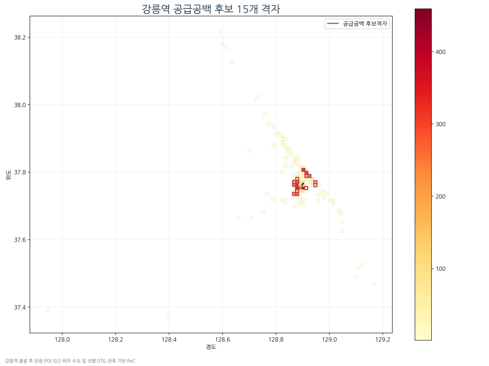

01
자료 정리
관광교통 후보를 찾을 공간·시간 단위 정의
DTG·TIMS 등의 택시 운행 자료를 지역·날짜·승차시간대별로 묶고 공간 정보와 연결했습니다. 관광지 주변 수요와 후보 판정의 집계 단위를 구분했습니다.
하차 위치 확인관광지 주변 연결구역·시간별 집계비교 자료 점검후보 선별
확인한 결과후보 선별은 03.24–30 자료이며 지도 수요 집계의 03.23–30 범위와 차이를 표시했습니다.
후보 0건의 원인을 선별 단계에서 확인
후보가 없는 이유까지 확인해, 다음 조사 대상을 구분했습니다.
강릉역 59개 후보 조합 / 15개 위치 · 청주공항 0건 원인 분석작업 배경 · 관광교통 연구 제안을 위해 강릉역·청주공항의 택시 자료에서 검토할 후보 지역·시간대를 선별했습니다.
확인된 수행 기록: 2026.08 / 분석 대상 택시 자료: 2025.03.24–30

웹 작업 기록QR 또는 제목 링크로 상세 내용 열기
연구 제안 발표자료에 후보 위치·시간대와 조건별 제외 사유를 표시했습니다.
강릉역은 후보 조합 59건·고유 위치 15개로 나눴습니다. 청주공항은 수요를 충족한 자료도 비교 표본 부족으로 제외돼 후보가 0건이었습니다.
● 관광접근 수요 6,758건
● 잠재 공급 관측 44,320건
강릉역 주변 후보 지도 전체와 원본 색상 범례입니다. 붉은 테두리는 공급 공백 검토 후보, 채움색은 관광 POI 인근 하차 수요입니다. 색이 진할수록 공급 부족이 크다는 뜻은 아닙니다. 59개 날짜·시간대 조합과 15개 고유 위치를 구분합니다.
공간 결합과 수요·비교 표본·공급 조건을 단계별로 나눠 중간 건수를 남겼습니다. 최종 목록만 보는 대신 어느 조건에서 자료가 빠졌는지 추적하고, 지도 위치와 날짜·시간대별 후보 조합을 구분했습니다.
분석 대상은 2025.03 자료이며 아래는 수행 순서입니다. 실제 공급 부족을 확정한 현장 조사는 아닙니다.
자료 정리
DTG·TIMS 등의 택시 운행 자료를 지역·날짜·승차시간대별로 묶고 공간 정보와 연결했습니다. 관광지 주변 수요와 후보 판정의 집계 단위를 구분했습니다.
확인한 결과후보 선별은 03.24–30 자료이며 지도 수요 집계의 03.23–30 범위와 차이를 표시했습니다.
기존 조건 적용
최소 수요, 같은 시간대의 비교 표본, 수요·공급 조건을 차례로 적용했습니다. 중복 연결을 막고 단계별로 제외되는 집계 항목을 확인했습니다.
확인한 결과강릉역과 청주공항에서 어느 단계에 자료가 줄어드는지 비교할 수 있었습니다.
후보 0건 원인 확인
청주공항에서는 수요 조건을 충족한 항목도 같은 시간대의 비교 자료가 기준보다 적었습니다. 후보가 없다는 결과만으로 공급이 충분하다고 결론 내릴 수 없었습니다.
확인한 결과수요 조건을 충족한 9개 항목이 비교 표본 조건에서 모두 제외됐음을 발표자료에 반영했습니다.
지도·발표자료 작성
같은 격자가 여러 날짜·시간대에 등장하므로 후보 목록과 지도상의 위치 수를 따로 표시했습니다. 지도의 채움색은 공급 부족량이 아닌 관광접근 수요로 설명했습니다.

원본 지도 크게 보기 ↗ · 제출 포트폴리오에 사용한 결과 이미지입니다.
확인한 결과강릉역의 검토 후보 위치와 청주공항의 판단 보류 이유를 함께 전달했습니다. 추가 표본·현장 확인은 다음 단계로 남겼습니다.
연구 제안용 지도와 발표자료의 판단 근거입니다. 실제 배차 변경이나 공급 개선 효과를 측정한 결과는 아닙니다.
택시 공급 부족 가능성을 검토할 후보를 찾기 위해 하차 위치와 관광지 주변 영역을 연결했습니다. 공간 결합 후 같은 하차가 여러 관광지에 중복 연결되지 않도록 처리하고 격자·날짜·승차시간대를 기준으로 집계했습니다.
최소 수요 3건, 같은 승차시간대의 비교 표본 4개와 수요·공급 조건은 기존 분석 기준입니다. 이 조건을 적용하고 단계별 제외 원인을 확인했습니다. 비교 표본은 최소 수요를 충족한 집계 항목의 수로, 사람 수나 차량 수가 아닙니다.
연구 제안 준비용 샘플 분석입니다. 지도에 표시한 곳은 검토 후보이며 실제 공급 부족을 확정한 지역이 아닙니다.
청주공항은 최종 후보가 0건이었지만 이를 수요 없음이나 공급 충분으로 해석할 수 없었습니다. 최소 수요를 충족한 항목은 9개였고, 같은 시간대의 비교 항목은 최대 3개여서 기준 4개를 채우지 못했습니다.
강릉역의 59건은 격자·날짜·시간의 조합 수이며 지도상 서로 다른 위치는 15개 구역입니다. 같은 구역이 여러 날짜·시간대에 후보로 나타날 수 있어 두 수치를 구분했습니다.
사람 수나 택시 대수가 아닙니다. 상자 크기는 수량 비례가 아니며 각 값은 원본 후보 자료를 재집계한 결과입니다.
지도에는 검토할 후보 위치를 제시하고, 발표자료에는 후보를 정한 조건과 제외된 이유를 설명했습니다. 후보가 적다는 이유만으로 두 거점의 공급 상태를 직접 비교하지 않도록 했습니다.
원본 지도의 붉은 테두리는 후보 15개 구역이고 채움색은 1km 격자별 관광접근 수요(관광 POI 인근 하차 통행 건수)입니다. 지도 수요 집계는 TIMS 2025.03.23–30, 후보 선별은 03.24–30으로 범위를 구분했습니다. 이 분석은 제안자료 작성과 검토에 사용했습니다. 추가 표본이나 현장 정보 없이 특정 지역의 실제 공급 부족을 확정하지 않았습니다.
원본 후보 지도는 제출용 PDF에만 포함하고, 웹에는 선별 결과와 해석을 제공합니다.
| 용어 | 이 자료에서의 의미 |
|---|---|
| 공급 공백 후보 | 택시 이용 수요와 주변 공급 관측을 비교해 공급 부족 가능성을 검토할 지역·시간대입니다. 실제 공급 부족 확정 결과는 아닙니다. |
| 격자·조합 | 격자는 지도에 나눈 분석 구역입니다. 구역·날짜·승차시간대를 묶은 집계 항목 하나를 조합 1개로 셉니다. |
| 비교 표본 4개 | 최소 수요를 충족한 집계 항목 중 같은 승차시간대에서 비교할 자료가 4개 이상이어야 한다는 기존 조건입니다. 사람 4명이나 택시 4대를 뜻하지 않습니다. |